Jobs, scored against your terms
Each posting gets a score and a check for each line you will not cross: contract, day rate, where, commute and language.
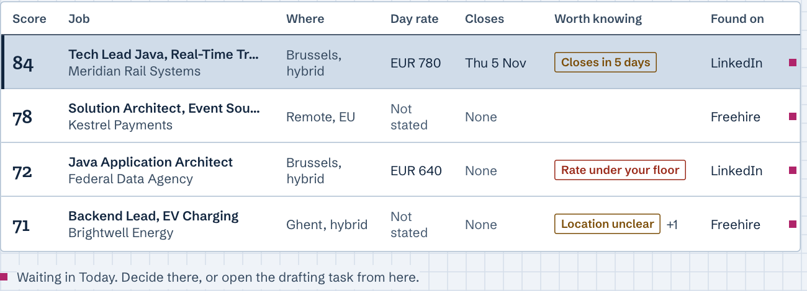
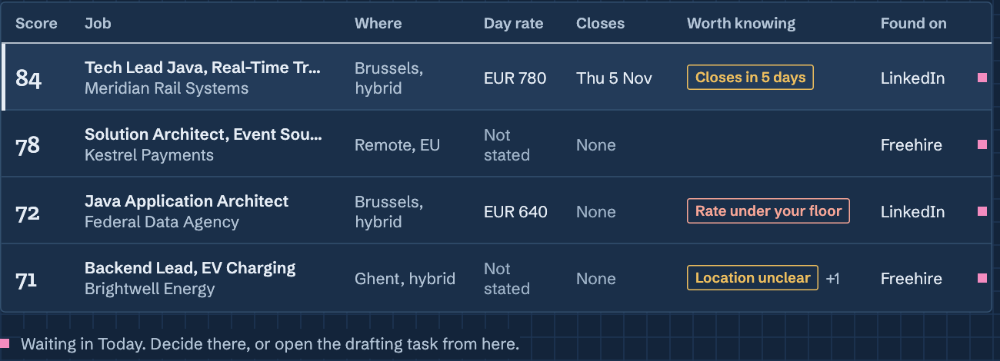
Your job search comes to you one decision at a time. Y on a new match opens the launcher with the line Claude will run, and Claude drafts your application only once you press Run.
Jobdesk is the desktop app for ai‑job‑search users: a GUI over its slash commands, run through your own Claude Code.
Both buttons open the latest release on GitHub. View the source
Run tasks on your own Anthropic API key, kept only in your system keychain, or on Claude Code’s own sign-in. How the key is kept
Needs an Apple silicon Mac or 64-bit Windows, the Claude Code CLI and an ai‑job‑search checkout. Setup steps
Strong fit, 84 of 100. All six checks pass.
ai‑job‑search is a set of Claude Code slash commands that find postings, score them and draft your applications. Jobdesk is a desktop GUI over them: each screen shows what the commands keep in your checkout, and follows along live as they run.
Each posting gets a score and a check for each line you will not cross: contract, day rate, where, commute and language.


OK, Unclear or Fails, with the reason beside it.
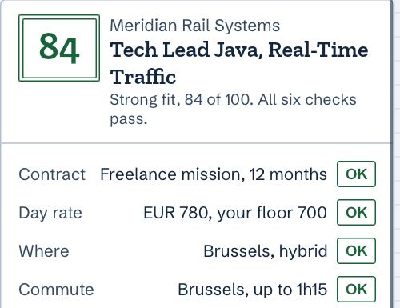
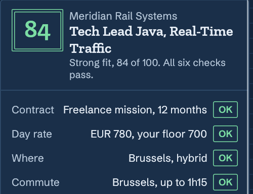
Start any slash command and follow it as a report. When Claude asks, its question waits above the reply box, with one-click replies at known stop points.
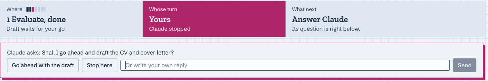
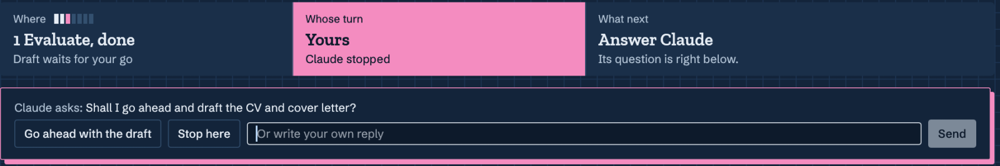
From Not sent yet to Closed. A pink edge marks what waits for you in Today.
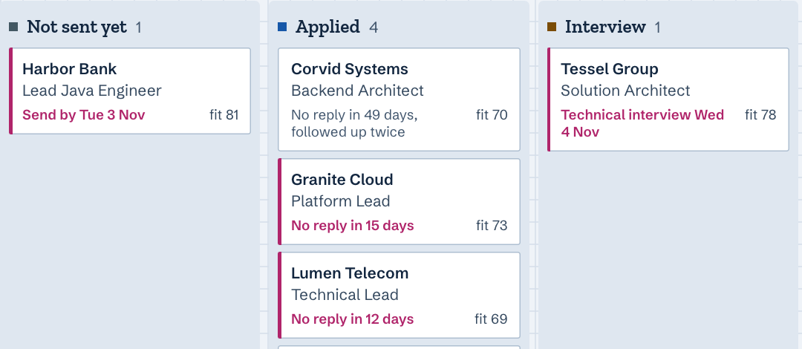
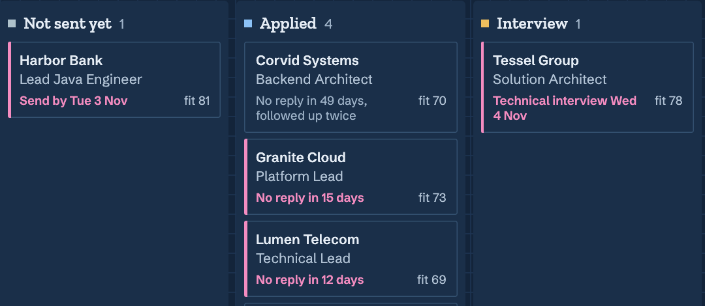
The PDFs, verification, keyword coverage, evaluation, prep packs and follow-ups of each application, in one place.
What Claude reads about you, topic by topic. Edit a block in place, and preview your CV PDFs with how fresh each is.
Usage statistics show spend, tokens and cache hits, from Jobdesk’s own run logs on your computer. The cost is Claude Code’s estimate at API list price: on a Claude plan, it is not your bill. Set a monthly cap in Settings.
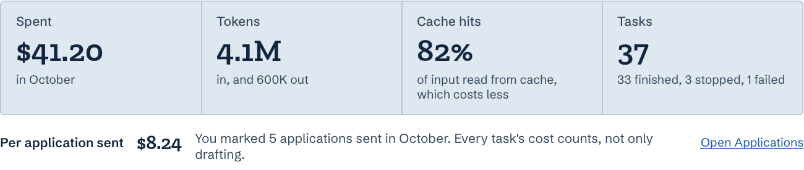
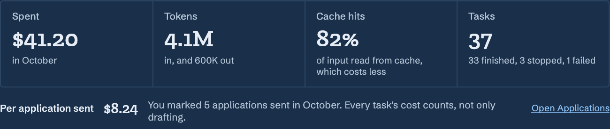
Jobdesk sits on top of what you already have: an ai‑job‑search checkout, the Claude Code CLI, and your own Anthropic API key or Claude Code’s sign-in.
From New task, or from a card's Y. You see the line Claude will run, and you press Run.
Through your local claude CLI, in your job search folder, on your own API key or Claude Code’s sign-in. One run works at a time.
/apply https://kestrel.example/jobs/2The command writes your checkout. Today, Jobs, Applications and Insights update as it does.
Paste a key from your Claude Console in Settings › Providers. Tasks then run on that key and bill its Console account. Jobdesk keeps it in your system keychain and hands it only to Claude Code.
claude process’s environment. Never on a command line or in a log, and never on screen in full.sk-ant-, dots and its last four characters. Only the key you are typing shows in full, while you press Show.The full account, with what the key is still exposed to: The API key, in Trust
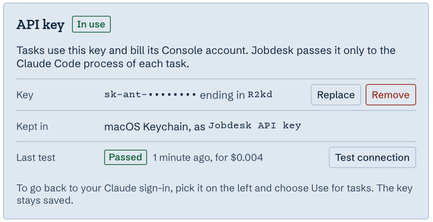
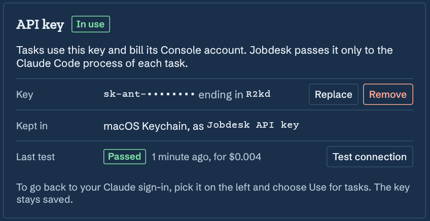
A job search holds a lot about you. Here is exactly what Jobdesk does with it.
The app never sends an application for you.
Send it from your own mail or the portal, then mark it sent. Jobdesk opens the task that records it.Free and open source under the MIT License. On first launch, choose your ai‑job‑search folder.
For Apple silicon. Open it and drag Jobdesk to Applications. Signed with a Developer ID and notarized by Apple.
Download for macOS (Apple silicon)Run the installer. It is not signed yet, so SmartScreen warns: click More info, then Run anyway.
Download for Windows (x64)Both buttons open the latest release on GitHub.
You need the Claude Code CLI, an Anthropic API key or Claude Code’s sign-in, and an ai‑job‑search checkout.